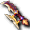

一般｜鏡之城｜異常狀態防禦｜99魔王區獎勵道具｜天上－善屬性｜天上－惡屬性
迪姆萊特系｜雷歐加爾特｜斯科爾菲吉
名稱為橘色的道具可以附魔。未鑑定名稱是該道具在未鑑定狀態下的名稱。裝備等級相同時，依鋒刃、奎雷克的順序排列。
提供情報或編輯請求，請到情報提供公佈欄、編輯公佈欄。
一般
| 名稱 | 價格 | 限制 | 職業 | Wei | 取得方式 |
 弧刃 弧刃 | 500 | Lv1 | 戰修盜騎阿聖魔預吟 | 3 | 魔界村：武具店、萊貝雅：鐵匠 |
| 能力 | 攻10～14、HIT+2%、HP+10 |
| 名稱 | 價格 | 限制 | 職業 | Wei | 取得方式 |
 法爾斯鋒刃 法爾斯鋒刃 | 1,500 | Lv5 | 戰修盜騎阿聖魔預吟 | 3 | 萊貝雅：鐵匠 |
| 能力 | 攻11～15、HIT+2%、HP+15 |
| 名稱 | 價格 | 限制 | 職業 | Wei | 取得方式 |
| 法爾斯鋒刃 | 1,500 | Lv5 | 戰修盜騎阿聖魔預吟 | 3 |  藍色木芥子、涅德帕姆 藍色木芥子、涅德帕姆 |
| 能力 | 攻11～15、HIT+2%、HP+15 |
| 名稱 | 價格 | 限制 | 職業 | Wei | 取得方式 |
| 卡瓦克鋒刃 | Lv11 | 戰修盜騎阿聖魔預吟 | 4 | 普拉科 | |
| 能力 | 攻19～22、HIT+2%、HP+20 |
| 名稱 | 價格 | 限制 | 職業 | Wei | 取得方式 |
 青銅鋒刃 青銅鋒刃 | 5,000 | Lv15 | 戰修盜騎阿聖魔預吟 | 史蒂帕尼 | |
| 能力 | 攻20～23、HIT+3%、HP+25 |
| 備註 | 阿修羅用雙手武器 |
| 名稱 | 價格 | 限制 | 職業 | Wei | 取得方式 |
| 賽提爾刃 | 6,000 | Lv21 | 戰修盜騎阿聖魔預吟 | 5 | 魔界村：防具店 |
| 能力 | 攻26～32、HIT+3%、HP+30 |
| 名稱 | 價格 | 限制 | 職業 | Wei | 取得方式 |
| 賽提爾刃 | 6,000 | Lv21 | 戰修盜騎阿聖魔預吟 | 5 | 卵巢4、貪婪蛋、托普斯、 萬聖節南瓜 萬聖節南瓜 |
| 能力 | 攻26～32、HIT+3%、HP+30 |
| 名稱 | 價格 | 限制 | 職業 | Wei | 取得方式 |
| 提斯特鋒刃 | 9,000 | Lv25 | 戰修盜騎阿聖魔預吟 | 5 |  波特 波特 |
| 能力 | 攻27～33、HIT+3%、HP+35 |
| 備註 | 阿修羅用雙手武器 |
| 名稱 | 價格 | 限制 | 職業 | Wei | 取得方式 |
| 蘭伯鋒刃 | Lv31 | 戰修盜騎阿聖魔預吟 | 6 | 波特波特、 西多利 西多利 | |
| 能力 | 攻33～38、HIT+4%、HP+40 |
| 備註 | 阿修羅用雙手武器 |
| 名稱 | 價格 | 限制 | 職業 | Wei | 取得方式 |
 肯比歐斯奎雷克 肯比歐斯奎雷克 | 890,000 | Lv31,FLv21 | 戰修盜騎阿聖魔預吟 | 5 | Q:肯比歐斯討伐 |
| 能力 | 攻:隨機(BaseDAM18～19、HPorSPorMP19～26、DAMorHIT7～11) |
| 名稱 | 價格 | 限制 | 職業 | Wei | 取得方式 |
| 奎拉特鋒刃 | Lv41 | 戰修盜騎阿聖魔預吟 | 6 | 卡雷瓦拉森林：帕梅拉 | |
| 能力 | 攻34～39、HIT+4%、HP+40 |
| 備註 | 阿修羅用雙手武器 |
| 名稱 | 價格 | 限制 | 職業 | Wei | 取得方式 |
| 法爾米克鋒刃 | Lv41 | 戰修盜騎阿聖魔預吟 | 6 |  梅札琳(黑)、貪婪、卡伊松、兇猛、 梅札琳(黑)、貪婪、卡伊松、兇猛、 劍齒虎（不確定） 劍齒虎（不確定） | |
| 能力 | 攻40～45、HIT+4%、HP+45 |
| 備註 | 阿修羅用雙手武器 |
| 名稱 | 價格 | 限制 | 職業 | Wei | 取得方式 |
| 古代鋒刃 | 30,000 | Lv43 | 戰修盜騎阿聖魔預吟 | 7 | 兇猛、爸爸梅馬德（不確定）、強力媽媽梅馬德、澤皮拉 |
| 能力 | 攻41～46、HIT+4%、HP+45 |
| 名稱 | 價格 | 限制 | 職業 | Wei | 取得方式 |
 青銅彎刀 青銅彎刀 | 45,000 | Lv51 | 戰修盜騎阿聖魔預吟 | 5 | 魔界村：武具店、 達斯特 達斯特 |
| 能力 | 攻46～53、DAM+5%、HP+50 |
| 名稱 | 價格 | 限制 | 職業 | Wei | 取得方式 |
| 青銅彎刀 | 45,000 | Lv51 | 戰修盜騎阿聖魔預吟 | 5 | 力量克雷布塔、死亡媽媽梅馬德 |
| 能力 | 攻46～53、DAM+5%、HP+50 |
| 名稱 | 價格 | 限制 | 職業 | Wei | 取得方式 |
 迪米爾奎雷克 迪米爾奎雷克 | 90,000 | Lv61 | 戰修盜騎阿聖魔預吟 | 5 | 索因錠 |
| 能力 | 攻47～57、DAM+5%、HP+60 |
| 名稱 | 價格 | 限制 | 職業 | Wei | 取得方式 |
| 迪米爾奎雷克 | 90,000 | Lv61 | 戰修盜騎阿聖魔預吟 | 5 | 強力冠軍、米爾班克斯、凱洛斯 |
| 能力 | 攻47～57、DAM+5%、HP+60 |
| 名稱 | 價格 | 限制 | 職業 | Wei | 取得方式 |
 覺醒武器 覺醒武器 | 0 | Lv61 | 戰修盜騎阿聖魔預吟 | 2010回歸箱 | |
| 能力 | 攻 |
| 備註 | 30天內可覺醒被封印能力的武器。期間過後會消失 |
| 名稱 | 價格 | 限制 | 職業 | Wei | 取得方式 |
| 奧爾蒂納鋒刃 | Lv71 | 戰修盜騎阿聖魔預吟 | 6 |  雪魔劍士 雪魔劍士 | |
| 能力 | 攻53～58、HIT+6%、HP+70 |
| 名稱 | 價格 | 限制 | 職業 | Wei | 取得方式 |
| 奧爾蒂納鋒刃 | Lv71 | 戰修盜騎阿聖魔預吟 | 6 |  阿納坎（紅） 阿納坎（紅） | |
| 能力 | 攻53～58、HIT+6%、HP+70 |
| 名稱 | 價格 | 限制 | 職業 | Wei | 取得方式 |
| 奧爾蒂納奎雷克 | 147,000 | Lv71 | 戰修盜騎阿聖魔預吟 | 6 |  怨靈術士、迪格巴吉、 怨靈術士、迪格巴吉、 波克西 波克西 |
| 能力 | 攻52～57、DAM+6%、HP+70 |
| 備註 | 阿修羅用雙手武器 |
| 名稱 | 價格 | 限制 | 職業 | Wei | 取得方式 |
| 奧爾蒂納奎雷克 | 147,000 | Lv71 | 戰修盜騎阿聖魔預吟 | 6 | 提奇死亡之眼（綠） |
| 能力 | 攻52～57、DAM+6%、HP+70 |
| 名稱 | 價格 | 限制 | 職業 | Wei | 取得方式 |
| 伊卡洛斯鋒刃 | 100,000 | Lv71,Flv5 | 戰修盜騎阿聖魔預吟 | 6 | Q:伊卡洛斯的成人式幫忙-2 |
| 能力 | 攻36～44、HIT+6%、HP+70 |
| 備註 | 從伊卡洛斯的洛格魯那裡得到的鋒刃 |
| 名稱 | 價格 | 限制 | 職業 | Wei | 取得方式 |
| 伊卡洛斯奎雷克 | 100,000 | Lv71,Flv5 | 戰修盜騎阿聖魔預吟 | 6 | Q:伊卡洛斯的成人式幫忙-1 |
| 能力 | 攻35～43、DAM+6%、HP+70 |
| 備註 | 從伊卡洛斯的洛格魯那裡得到的奎雷克 |
| 名稱 | 價格 | 限制 | 職業 | Wei | 取得方式 |
 泰特拉彎刀 泰特拉彎刀 | 2,000,000 | Lv71 | 戰修盜騎阿聖魔預吟 | 0 | Q:泰特拉武器 |
攻42～70
不可轉讓、不可放置地面。以古代文明失落的物質製成的阿修羅用雙手武器。可用專用捲軸附魔，但會附魔什麼效果完全未知。
| 名稱 | 價格 | 限制 | 職業 | Wei | 取得方式 |
 命運奎萊克 命運奎萊克 | 452,000 | Lv71，Flv15 | 戰修盜騎阿聖魔預吟 | 6 | Q:扭曲命運的武器 |
| 能力 | 攻36～40、HIT+10%、HP+100、CON+10 |
| 備註 | 領悟自我、開拓命運者的奎雷克。具有某種魔力所帶來的特殊力量。 |
| 名稱 | 價格 | 限制 | 職業 | Wei | 取得方式 |
 合奏之刃 合奏之刃 | 290,000 | Lv81 | 戰修盜騎阿聖魔預吟 | 7 | 弗利克爾（紫） |
| 能力 | 攻59～66、HIT+6%、HP+80 |
| 名稱 | 價格 | 限制 | 職業 | Wei | 取得方式 |
| 合奏之刃 | 290,000 | Lv81 | 戰修盜騎阿聖魔預吟 | 7 | 諾肯將軍、怨靈術士 |
| 能力 | 攻59～66、HIT+6%、HP+80 |
| 備註 | 阿修羅用雙手武器 |
| 名稱 | 價格 | 限制 | 職業 | Wei | 取得方式 |
| 合奏奎雷克 | 290,000 | Lv81 | 戰修盜騎阿聖魔預吟 | 7 | 弗利克爾(紅)、［弗利克爾］、怨靈術士 |
| 能力 | 攻58～65、DAM+6%、HP+80 |
| 名稱 | 價格 | 限制 | 職業 | Wei | 取得方式 |
| 合奏奎雷克 | 290,000 | Lv81 | 戰修盜騎阿聖魔預吟 | 7 |  切斯曼騎士、藍寶石波恩騎士 切斯曼騎士、藍寶石波恩騎士 |
| 能力 | 攻58～65、DAM+6%、HP+80 |
| 備註 | 阿修羅用雙手武器 |
| 名稱 | 價格 | 限制 | 職業 | Wei | 取得方式 |
 迅捷奎雷克 迅捷奎雷克 | 99,000 | Lv81,FLv21 | 戰修盜騎阿聖魔預吟 | 11 |  寵物玩偶 寵物玩偶 |
| 能力 | 攻65～75、AC+15、MC+15、DAM+10%、HIT+7%、HP-100 |
| 備註 | 捨棄防禦，換取如鬼人般攻擊力的受詛咒奎雷克。 |
| 名稱 | 價格 | 限制 | 職業 | Wei | 取得方式 |
 迅捷奎雷克-單 迅捷奎雷克-單 | 100,000 | Lv85,FLv31 | 戰修盜騎阿聖魔預吟 | 11 | 寵物玩偶 |
| 能力 | 攻70～80、AC+18、MC+18、DAM+13%、HIT+9%、HP-120、SP-50、STR9、CON-5 |
| 備註 | 捨棄防禦，換取如鬼人般攻擊力的受詛咒奎雷克。單升級狀態。 |
| 名稱 | 價格 | 限制 | 職業 | Wei | 取得方式 |
 火焰奎雷克 火焰奎雷克 | 500,000 | Lv81,FLv21 | 戰修盜騎阿聖魔預吟 | 8 | Q:火焰武器 |
攻43～48、DAM+6%、HP+50、SP+50、STR+3、CON+4
天界眾神使用的武器之一，是藉由伊索尼亞記憶降臨的武器
| 名稱 | 價格 | 限制 | 職業 | Wei | 取得方式 |
 艾爾馬刃 艾爾馬刃 | 450,000 | Lv91 | 戰修盜騎阿聖魔預吟 | 8 |  冰霜貴族、九拾九之鬼 冰霜貴族、九拾九之鬼 |
| 能力 | 攻65～71、HIT+7%、HP+100 |
| 名稱 | 價格 | 限制 | 職業 | Wei | 取得方式 |
| 艾爾馬刃 | 450,000 | Lv91 | 戰修盜騎阿聖魔預吟 | 8 |  堅硬魔像 堅硬魔像 |
| 能力 | 攻65～71、HIT+7%、HP+100 |
| 名稱 | 價格 | 限制 | 職業 | Wei | 取得方式 |
| 艾爾馬彎刀 | 450,000 | Lv91 | 戰修盜騎阿聖魔預吟 | 8 | 冰霜貴族、九拾九之鬼 |
| 能力 | 攻64～70、DAM+7%、HP+100 |
| 名稱 | 價格 | 限制 | 職業 | Wei | 取得方式 |
| 艾爾馬彎刀 | 450,000 | Lv91 | 戰修盜騎阿聖魔預吟 | 8 | 悠久之森2 |
| 能力 | 攻64～70、DAM+7%、HP+100 |
| 名稱 | 價格 | 限制 | 職業 | Wei | 取得方式 |
 光環奎雷克 光環奎雷克 | 1,000,000 | Lv91,FLv31 | 戰修盜騎阿聖魔預吟 | 8 | Q:光環武器 |
攻43～48、DAM+8%、HP+80、SP+80、STR+4、CON+6
天界眾神使用的武器之一，是藉由伊索尼亞記憶降臨的武器
| 名稱 | 價格 | 限制 | 職業 | Wei | 取得方式 |
 極限奎雷克 極限奎雷克 | 2,000,000 | Lv98,FLv50 | 戰修盜騎阿聖魔預吟 | 9 | Q:極限武器 |
| 能力 | 攻130～190、STR5 |
| 備註 | 據說只有克服無數困難的真正勇者才能取得的傳說奎雷克。但是以目前的狀態無法充分發揮其力量。 |
| 名稱 | 價格 | 限制 | 職業 | Wei | 取得方式 |
| 極限奎雷克 | Lv98,FLv50 | 戰修盜騎阿聖魔預吟 | Q:極限武器 | | |
| 能力 | 攻130～190、AC-10、MC-10、DAM+10、HP+200、MP+100、SP+100、STR+4、CON+4 |
| 備註 | 1個月後消失。僅可用專用捲軸附魔。據說只有克服無數困難的真正勇者才能取得的傳說奎雷克。擁有驚人的能力。 |
鏡之城
格里馬林
| 名稱 | 價格 | 限制 | 職業 | Wei | 取得方式 |
| (遺忘)格里馬林奎雷克 | - | Lv91,FLv31 | 戰修盜騎阿聖魔預吟 | 15 | 鏡之空間4 |
攻49～58、DAM+4%、HP+80、SP+80、STR+3、CON+5
完成使命、即將消失的武器。3天內，或死亡時消失。不可染色
| 名稱 | 價格 | 限制 | 職業 | Wei | 取得方式 |
| 格里馬林奎雷克 | - | Lv93,FLv41 | 戰修盜騎阿聖魔預吟 | 15 | 冷酷的鏡之間1 |
攻47～56、DAM+4%、HP+80、SP+80、STR+3、CON+4
完成使命、即將消失的武器。經過30天就會消失。升級後可延長武器的壽命。耐久度100％
斯帕克林
| 名稱 | 價格 | 限制 | 職業 | Wei | 取得方式 |
| 斯帕克林奎雷克 | 792000 | Lv103,FLv51 | 戰修盜騎阿聖魔預吟 | 15 | |
攻67～83、DAM+8%、HP+80、SP+100、STR+4、CON+4
耐久度100％
格雷爾
| 名稱 | 價格 | 限制 | 職業 | Wei | 取得方式 |
| (遺忘)格雷爾奎雷克 | 1,188,000 | Lv100,FLv41 | 戰修盜騎阿聖魔預吟 | 16 | 冷酷的鏡之間1 |
攻78～104、DAM+11%、HP+110、SP+120、STR+6、CON+6
完成使命、即將消失的武器。3天內，或死亡時消失。不可染色，耐久度100％
異常狀態防禦
| 名稱 | 價格 | 限制 | 職業 | Wei | 取得方式 |
 阿瓦爾彎刀 阿瓦爾彎刀 | 100,000 | Lv81,FLv21 | 戰修盜騎阿聖魔預吟 | 7 | 格蘭德拜斯 |
| 能力 | 攻30～35、DAM+6、HIT+3、HP80、CON4 |
| 備註 | 混亂防禦 |
| 名稱 | 價格 | 限制 | 職業 | Wei | 取得方式 |
| 賽勒西斯彎刀 | 150,000 | Lv91,FLv31 | 戰修盜騎阿聖魔預吟 | 8 | [冰霜貴族](羅西的房間・亞泰歐房間) |
| 能力 | 攻35～38、DAM+7、HIT+3、HP100、CON5 |
| 備註 | 混亂防禦 |
| 名稱 | 價格 | 限制 | 職業 | Wei | 取得方式 |
| 坎夏斯奎雷克 | ? | Lv95,FLv35 | 戰修盜騎阿聖魔預吟 | 10 |  星之記憶(星座彩券) 星之記憶(星座彩券) |
| 能力 | 攻71～109、DAM+8、HIT+11、HP-120、SP-90、CON+5 |
| 備註 | 可防禦混亂與中毒異常狀態的武器。對受詛咒武器附魔異常狀態防禦能力，強化了機能。混亂防禦(PCount:150)中毒防禦(PCount:150) |
| 名稱 | 價格 | 限制 | 職業 | Wei | 取得方式 |
 迪捷雷德奎雷克 迪捷雷德奎雷克 | 2,300,000 | Lv95,FLv35 | 戰修盜騎阿聖魔預吟 | 10 | Q:赫爾西翁製造 |
| 能力 | 攻50～55、SAR+1、DAM+6、HIT+11、HP180、SP100、STR4、CON7、DEX1 |
| 備註 | 混亂防禦(PCount:200) |
| 名稱 | 價格 | 限制 | 職業 | Wei | 取得方式 |
| 蒂亞雷德奎雷克 | 2,750,000 | Lv97,FLv45 | 戰修盜騎阿聖魔預吟 | 6 | Q:赫爾西翁升級 |
| 能力 | 攻52～57、SAR+1、DAM+7、HIT+11、HP200、SP120、STR5、CON7、DEX2 |
| 備註 | 強化迪捷雷德奎雷克的奎雷克混亂防禦(PCount:200) |
| 名稱 | 價格 | 限制 | 職業 | Wei | 取得方式 |
| 究極奎雷克 | 2,000,000 | Lv99,FLv51 | 戰修盜騎阿聖魔預吟 | 9 | Q:究極武器 |
| 能力 | 攻140～170、DAM+7、HIT+5、HP30、MP30、SP100、STR3、CON3、DEX3、Critical1% |
| 備註 | 地上系最強的奎雷克。最強阿修羅的證明。中毒防禦(PCount:50) |
| 名稱 | 價格 | 限制 | 職業 | Wei | 取得方式 |
| 究極奎雷克-單 | 2,500,000 | Lv99,FLv55 | 戰修盜騎阿聖魔預吟 | 11 | Q:終極武器升級 |
| 能力 | 攻141～170、DAM+8、HIT+5、HP30、MP30、SP100、STR4、CON3、DEX3、Critical2%、attackspeed1% |
| 備註 | 地上系最強的奎雷克。最強阿修羅的證明。單升級狀態。中毒防禦(PCount:60) |
| 名稱 | 價格 | 限制 | 職業 | Wei | 取得方式 |
 究極奎雷克-雙 | 3,000,000 | Lv99,FLv61 | 戰修盜騎阿聖魔預吟 | 13 | Q:終極武器升級 |
| 能力 | 攻142～170、DAM+9、HIT+5、HP30、MP30、SP100、STR4、CON3、DEX4、Critical3%、attackspeed2% |
| 備註 | 地上系最強的奎雷克。最強阿修羅的證明。雙升級狀態。中毒防禦(PCount:70) |
99魔王區獎勵道具
| 名稱 | 價格 | 限制 | 職業 | Wei | 取得方式 |
| 單鋒刃 | 890,000 | Lv75,FLv20 | 戰修盜騎阿聖魔預吟 | 8 | Q:99魔王區 |
| 能力 | 攻30～40、DAM+1、MDAM+1、HIT+1、CON+2、MP+5、隨機(BaseDAM16～22、HP20～35、SP20～35、HIT5～12) |
| 備註 | 隨機附魔 99魔王區獎勵道具 |
| 名稱 | 價格 | 限制 | 職業 | Wei | 取得方式 |
| 雙鋒刃 | 890,000 | Lv78,FLv25 | 戰修盜騎阿聖魔預吟 | 8 | Q:99魔王區 |
| 能力 | 攻35～45、DAM+1、MDAM+2、HIT+2、CON+2、MP+10、隨機(BaseDAM16～22、HP20～35、SP20～35、HIT5～12) |
| 備註 | 隨機附魔 99魔王區獎勵道具 |
| 名稱 | 價格 | 限制 | 職業 | Wei | 取得方式 |
| 三鋒刃 | 890,000 | Lv81,FLv30 | 戰修盜騎阿聖魔預吟 | 8 | Q:99魔王區 |
| 能力 | 攻40～50、DAM+2、MDAM+2、HIT+2、CON+2、HP+5、MP+10、隨機(BaseDAM16～22、HP20～35、SP20～35、HIT5～12) |
| 備註 | 隨機附魔 99魔王區獎勵道具 |
| 名稱 | 價格 | 限制 | 職業 | Wei | 取得方式 |
| 五鋒刃 | 890,000 | Lv84,FLv35 | 戰修盜騎阿聖魔預吟 | 8 | Q:99魔王區 |
| 能力 | 攻45～55、DAM+2、MDAM+3、HIT+3、CON+3、HP+10、MP+15、隨機(BaseDAM16～22、HP20～35、SP20～35、HIT5～12) |
| 備註 | 隨機附魔 99魔王區獎勵道具 |
| 名稱 | 價格 | 限制 | 職業 | Wei | 取得方式 |
| 六鋒刃 | 890,000 | Lv86,FLv40 | 戰修盜騎阿聖魔預吟 | 8 | Q:99魔王區 |
| 能力 | 攻50～60、DAM+3、MDAM+3、HIT+3、CON+3、HP+15、MP+20、隨機(BaseDAM16～22、HP20～35、SP20～35、HIT5～12) |
| 備註 | 隨機附魔 99魔王區獎勵道具 |
| 名稱 | 價格 | 限制 | 職業 | Wei | 取得方式 |
| 七鋒刃 | 890,000 | Lv88,FLv45 | 戰修盜騎阿聖魔預吟 | 8 | Q:99魔王區 |
| 能力 | 攻55～65、DAM+3、MDAM+4、HIT+4、CON+3、HP+15、MP+25、隨機(BaseDAM16～22、HP20～35、SP20～35、HIT5～12) |
| 備註 | 隨機附魔 99魔王區獎勵道具 |
| 名稱 | 價格 | 限制 | 職業 | Wei | 取得方式 |
| 八鋒刃 | 890,000 | Lv90,FLv50 | 戰修盜騎阿聖魔預吟 | 8 | Q:99魔王區 |
| 能力 | 攻60～70、DAM+5、MDAM+5、HIT+5、CON+3、HP+20、MP+35、隨機(BaseDAM16～22、HP20～35、SP20～35、HIT5～12) |
| 備註 | 隨機附魔 99魔王區獎勵道具 |
天上－善屬性
| 名稱 | 價格 | 限制 | 職業 | Wei | 取得方式 |
| 帕爾塞斯奎雷克 | 10,000 | Lv91,FLv31TLv1,BLv1 | 戰修盜騎阿聖魔預吟 | 8 |  藍色阿米倫(斯坎達倫6) 藍色阿米倫(斯坎達倫6) |
| 能力 | 攻42～50、DAM+6、HIT+3、HP140、CON4 |
| 備註 | 1階段封印的帕爾塞斯奎雷克 |
| 名稱 | 價格 | 限制 | 職業 | Wei | 取得方式 |
| 帕爾塞斯奎雷克 | 10,000 | Lv91,FLv31TLv11,BLv11 | 戰修盜騎阿聖魔預吟 | 8 | 解除封印 |
| 能力 | 攻42～50、DAM+6、HIT+5、HP140、SP100、CON4 |
| 備註 | 解除封印的帕爾塞斯奎雷克 |
帕爾塞斯奎雷克 升級
| 1階段 | 2階段 | 3階段 | 附魔值 | | |
| HP+20SP+20 | | | | | |
| 名稱 | 價格 | 限制 | 職業 | Wei | 取得方式 |
| 庫修倫奎雷克 | 20,000 | Lv93,FLv41TLv31,BLv31 | 戰修盜騎阿聖魔預吟 | 9 | ［炎岩追獵者］(歐佩爾6,歐佩爾7) |
攻45～53、DAM+6、HIT+4、HP160、CON5
備註：1階段封印的庫修倫奎雷克
| 名稱 | 價格 | 限制 | 職業 | Wei | 取得方式 |
| 庫修倫奎雷克 | 20,000 | Lv93,FLv41TLv41,BLv41 | 戰修盜騎阿聖魔預吟 | 9 | 解除封印 |
| 能力 | 攻45～53、DAM+6、HIT+6、HP160、SP100、CON5 |
| 備註 | 解除封印的庫修倫奎雷克 |
庫修倫奎雷克 升級